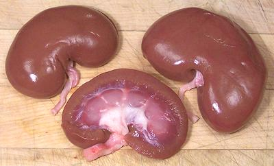

Lamb Kidneys

[Gurda (Hindi)]
Lamb kidneys are eaten by pretty much every culture where lamb is a
significant item in the diet. They are similar in size, shape and taste
and are generally interchangeable with pig kidneys (unless you're a
Muslim or observant Jew). The photo specimens were 3-3/4 inches long and
weighed 3-3/4 ounces each.
More on Lamb Innnards.
Buying:
These can be found in markets serving communities
from countries that use a lot of lamb: Turkey, Armenia, Middle East, North
Africa, Pakistan, etc. They should not have a strong odor.
Prep:
Split kidneys lengthwise as shown in photo above.
Cut out the white fat and any attached plumbing.
as_kidneyz 091011 - www.clovegarden.com
©Andrew Grygus - agryg@clovegarden.com - Photos
on this page not otherwise credited © cg1
- Linking to and non-commercial use of this page permitted